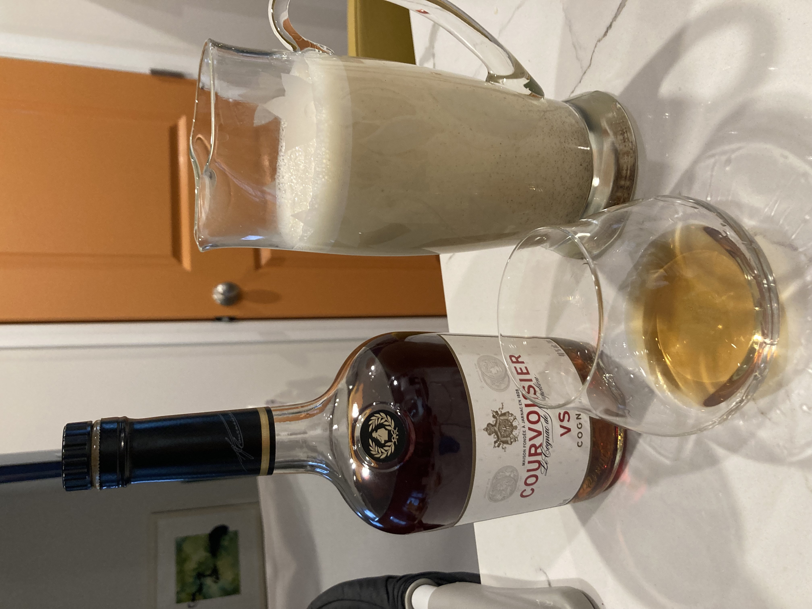

Recipe forthcoming once the torched sugar situation is resolved.

Gin, sweet vermouth, and Campari — the standard Negroni trinity — plus fresh grapefruit juice and homemade cranberry simple syrup. Dry shake with egg white for foam, then shake again with ice. Double strain. Garnish with a grapefruit wedge and freshly grated cinnamon.

Standard French 75 build — gin, lemon juice, homemade cranberry simple syrup — topped with champagne. Garnished with a long twirled lime peel.

Muddle cucumber and fresh mint. Add gin, fresh lime juice, and a little simple syrup. Shake well and double strain into a coupe.

The technique: fill a small cooler with water and leave it in the freezer with the lid off. The top freezes clear while impurities and bubbles are pushed to the bottom. Score and crack to get your block, then carve to shape.

White bread poolish following Flour Water Salt Yeast (FWSY). Baguette technique mostly following the NYTimes baking lady.


Recipe forthcoming.

Lost to time. Best guess: a daiquiri base (rum, lime, simple syrup) with muddled watermelon and mint. Garnished with floating fruit and a mint flag.

2 oz whiskey of choice · 0.75 oz lemon juice · 0.75 oz simple syrup. Shaken and double strained into a cocktail glass. Gently float red wine on top using a spoon.
Some folks still do this with an egg white foam; some folks do this on ice, but I prefer it with no egg white, served neat in a coupe glass.